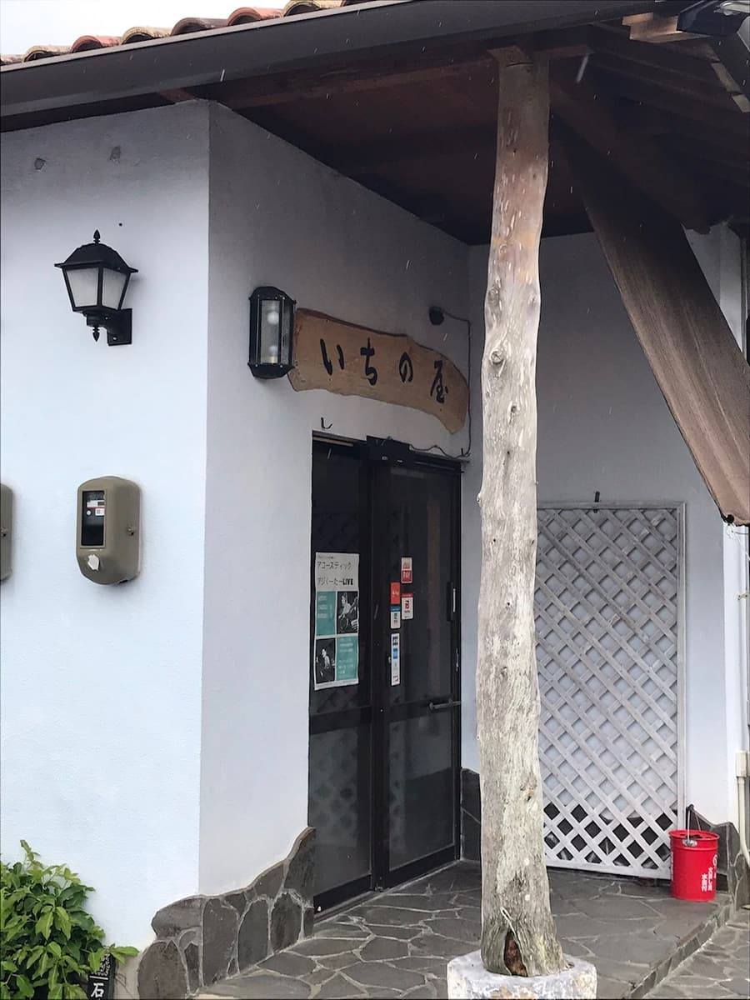
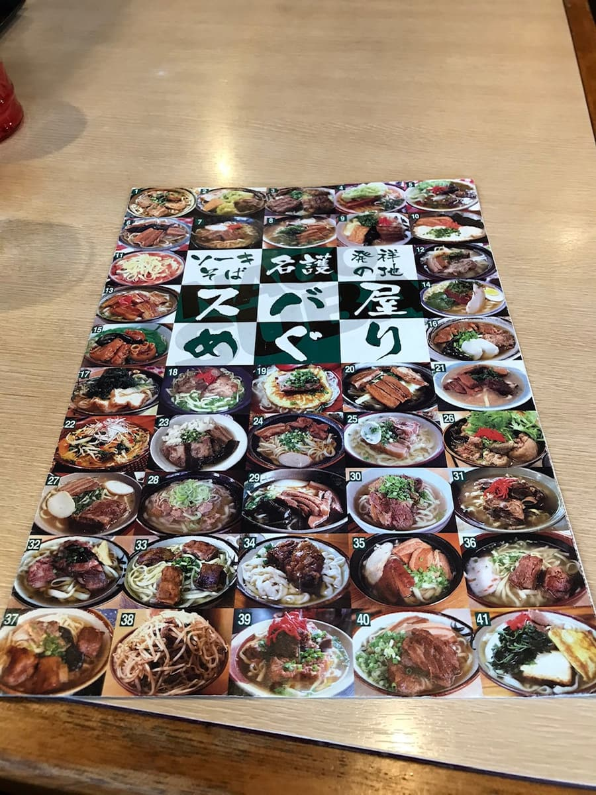
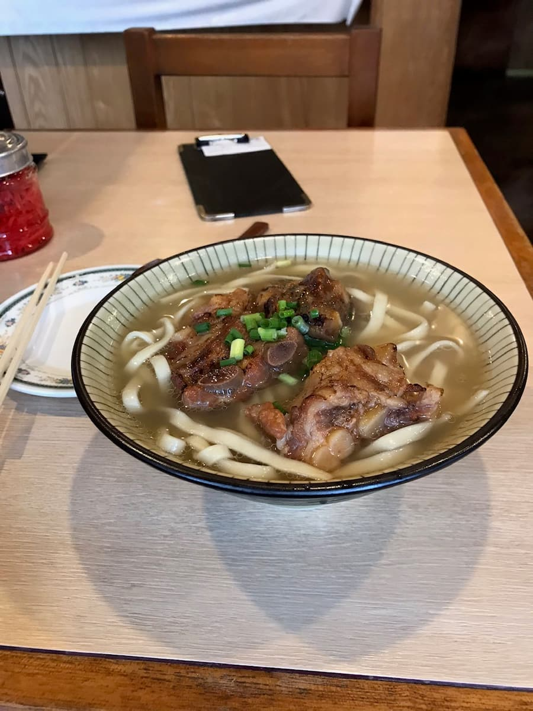

'나고시 소바 맵'에 소개되어 있어서 2020년 10월에 먹었습니다😄


'구운 소키 소바'를 주문. 가쓰오 육수의 풍미가 강하고, 스트레이트 보통 면에 구운 돼지갈비(소키)도 부드럽고 맛있어요😋 지금까지는 코레구스(시마토가라시(섬 고추)를 아와모리에 담근 오키나와현의 조미료)를 먹어 보지도 않고 싫어해서 피했는데, 이 이치노야쯤부터 넣으면 국물 맛이 바뀌어서 두 번 맛있다는 걸 깨닫기 시작해서, 그 후로는 중간에 코레구스를 넣게 됐어요😄

평가(9점/15점): 무난하게 맛있다고 생각해요. 소바 맵에서는 '데카데카 소바'라는 소바가 '돼지뼈와 가쓰오 육수가 향긋한 푸짐한 양'이라고 맛있어 보이게 설명되어 있어서, 다음 기회가 있으면 도전하고 싶네요😄 그리고 코레구스도 먹어 보지도 않고 싫어했던 거라는 걸 깨달았고, 국물 맛이 바뀌어서 추천하니 꼭 넣어 보세요.
면: ★★★☆☆（3）
수프: ★★★☆☆（3）
토핑: ★★★☆☆（3）